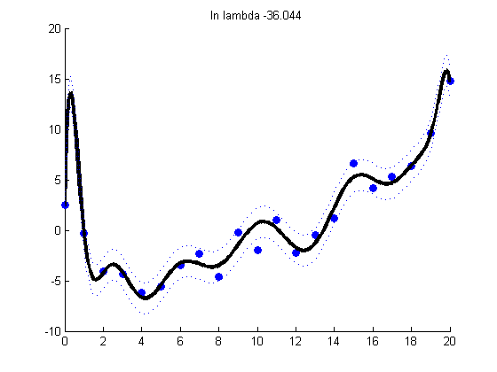
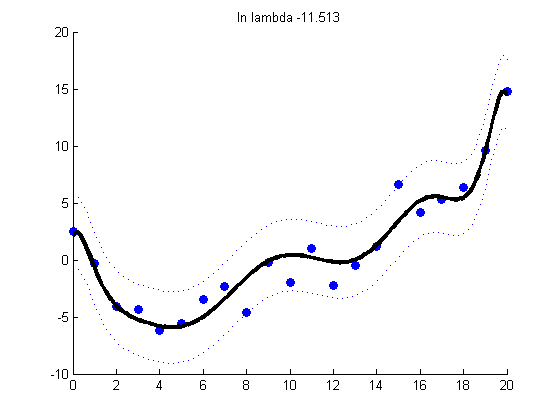
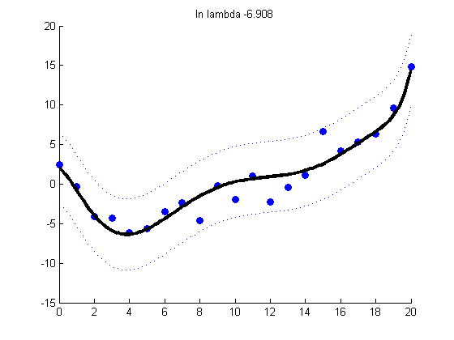
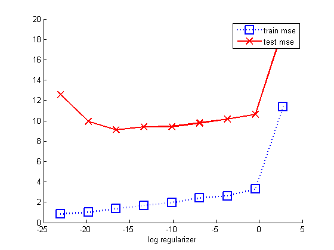

Contents
Polynomial Regression Demo
[xtrain, ytrain, xtest, ytestNoisefree, ytest] = polyDataMake('sampling','thibaux');
deg = 14;
[Xtrain] = rescaleData(xtrain);
Xtrain = degexpand(Xtrain, deg, false);
[Xtest] = rescaleData(xtest);
Xtest = degexpand(Xtest, deg, false);
Plot regularized fit for various lambdas
lambdas = [0 0.00001 0.001];
NL = length(lambdas);
for k=1:NL
lambda = lambdas(k);
[model] = linregFit(Xtrain, ytrain, 'lambda', lambda, 'fitMethod', 'QR', 'standardizeX', false);
[ypredTest, s2] = linregPredict(model, Xtest);
sig = sqrt(s2);
figure;
scatter(xtrain, ytrain,'b','filled');
hold on;
plot(xtest, ypredTest, 'k', 'linewidth', 3);
plot(xtest, ypredTest + sig, 'b:');
plot(xtest, ypredTest - sig, 'b:');
title(sprintf('ln lambda %5.3f', log(lambda + eps)))
end
  
Now compare logev with train/test error on a dense grid of lambdas
lambdas = logspace(-10,1.2,9);
NL = length(lambdas);
testMse = zeros(1,NL); trainMse = zeros(1,NL);
for k=1:NL
lambda = lambdas(k);
[model] = linregFit(Xtrain, ytrain, 'lambda', lambda, 'fitMethod', 'QR', 'standardizeX', false);
ypredTest = linregPredict(model, Xtest);
ypredTrain = linregPredict(model, Xtrain);
testMse(k) = mean((ypredTest - ytest).^2);
trainMse(k) = mean((ypredTrain - ytrain).^2);
end
figure; hold on
ndx = log(lambdas);
plot(ndx, trainMse, 'bs:', 'linewidth', 2, 'markersize', 12);
plot(ndx, testMse, 'rx-', 'linewidth', 2, 'markersize', 12);
legend('train mse', 'test mse')
xlabel('log regularizer')
printPmtkFigure('linregL2PolyVsReg-mse')
